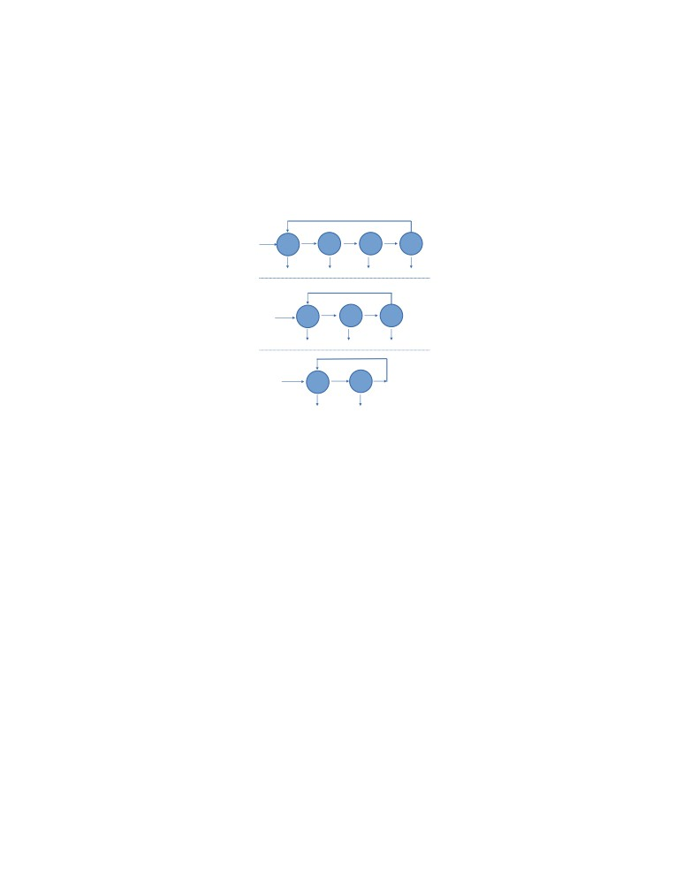
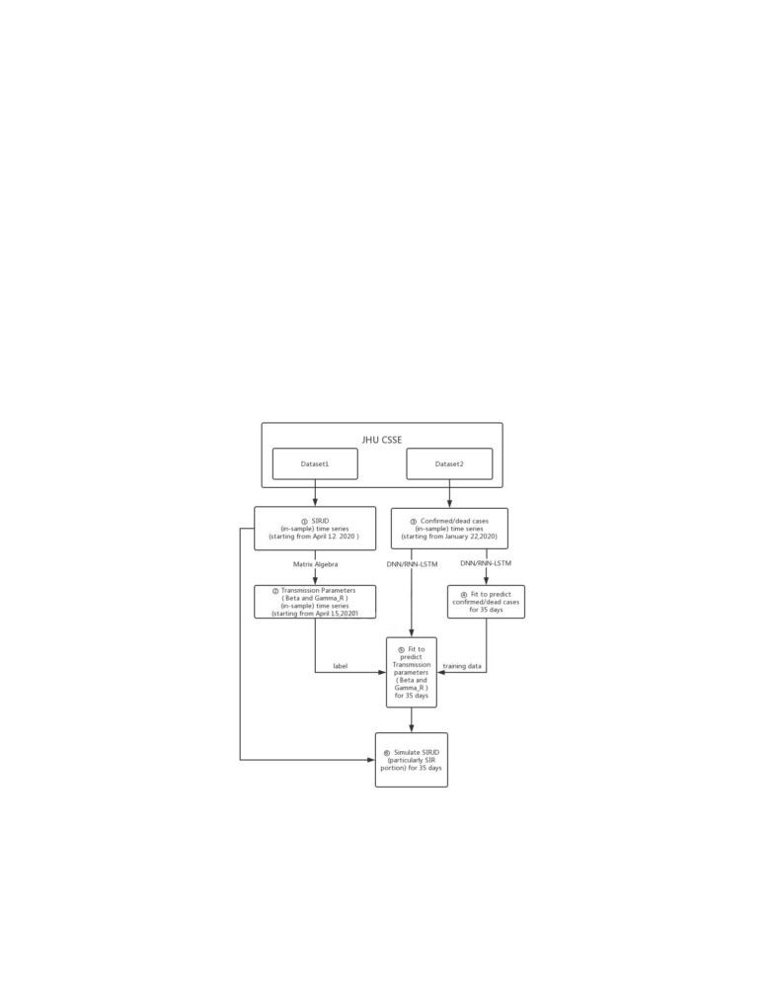
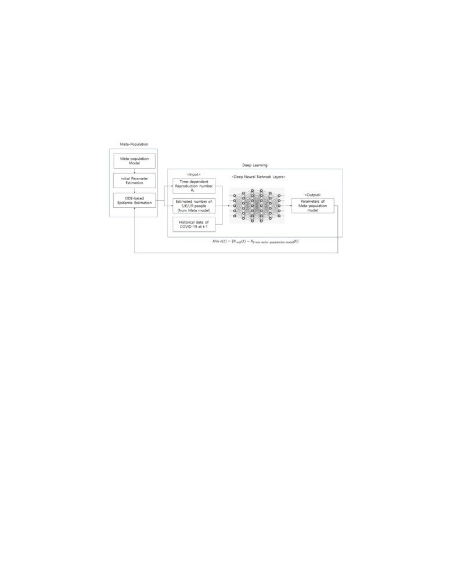

Integrating COVID-19 compartmental models
and DL models
jabir and nelson
October 2021
1
The Idea
Its is well known that the prediction accuracy of neural networks is higher than
that of traditional prediction methods. This is primarily related to the neural
network’s features. Neural networks are good at capturing the properties of
complicated systems with high non-linearity that are difficult to represent using
a precise mathematical model, and they are also very adaptable. In-fact COVID-
19 dynamics within populations is a complex system with random mutation of
the virus and due to the complexity of social mobility. LSTM layer is a type of
Recurrent Neural Network (RNN) that utilizes learning from concurrent data.
Initially, we had this exciting idea of forecasting COVID-19 trends by pre-
dicting parameters of deterministic compartment based model for COVID-19
in each time step from trends in previous time steps using some deep learning
models. And then we the solve the compartmental model ODE’s to predict the
trends in the particular time step, and so on with the succeeding time steps.
But unfortunately, from a recent google search, we found that, people had al-
ready thought of it, and they had already done fantastic works based on this
idea, especially using LSTM, as in [1, 4]. And they have got very good results.
Therefore, we will try to give a short combined review of [1, 2, 3, 4] in this
report and propose to use the idea in our project.
2
Compartmental modeling for infectious dis-
eases
Regardless of the nature of transmissibility of human infectious diseases, the
individual life-course of infection can be conveniently represented by a sequence
of transitions between a few epidemiological classes, or compartments, triggered
by specific processes and parameters. For new pathogens, such as a pandemic
flu virus, all individuals are initially susceptible to the infection (class S), which
they acquire at a rate λ entering the exposed class (E), a latency or incubation
phase where individuals are infected, i.e. the virus is replicating in their body,
but not yet infective, which they become at some rate α. Individuals belonging
1

to the infective class (I) will usually recover, at a rate γ , acquiring immunity
and entering the removed class (R). Such modelling can be illustrated as shown
in Fig. 1
δ
birth
λ(t)
α
γ
S
E
I
R
μ
μ
μ
μ
δ
birth
λ(t)
γ
S
I
R
μ
μ
μ
birth
λ(t)
γ
S
I
μ
μ
Figure 1: The compartmental representation SEIRS, SIRS and SIS models for
some important classes of infections of individual course. The circles are identi-
fied epidemiological classes and arrows are marked as the process of class change,
entry and exit due to demographics.
Based on this illustration of the individual course, we can model the spread of
an infectious disease by describing the dynamics of infections at the population
level, by assigning a dynamic variable to each compartment denoting the number
(or the proportion) of individuals in that class at each instant of time. So, lets
denote the total population size and N, and X (S = X /N), H (E = H /N),
Y (I = Y /N), Z (R = Z /N) as the numbers (proportions) of individuals who
respectively occupy the various classes at time t, with N = X + H + Y + Z ,
and S + E + I + R = 1.
The population as a whole can be related to concept of homogeneous (or ran-
dom) mixing, which in this context, refers to an infection spreading by direct
person-to-person contacts in a closed homogenous social medium, the popula-
tion, whose agents have an approximately identical social activity. So, if C is
the number of contacts made by a susceptible individual per unit time, then
the probability that the contact made is with an infected individual is obviously
I = Y/N. And if βI is the probability that the disease will be transmitted to
the susceptible individual from the infected individual, then the rate λ at which
individuals leave from the suceptible class S in Fig.
1 can be written as λ =
2
βICI. Setting β = βIC, λ = βI.
Now, assuming that a population N has an unique and globally stable equilib-
rium Ne such that birth rate b(Ne) and mortality m(Ne) rate of the population
are the same, i.e., b(Ne) = m(Ne) = α, and that the population is at this steady
state, then we can translate the SEIRS diagram in Fig.
1 into the following
mean-field system of ODEs,
S′ = µ(1 − S) + δR − βSI
(1)
E′ = βSI − (α + µ)E
(2)
I′ = αE − (γ + µ)I
(3)
complemented by R = 1 - S - E - I. Thus, the Model of Eqs. 1-3 is the so-called
deterministic SEIRS model.
2.1
SEIR modifications for COVID1-19
People had considered different modifications of SEIR model, such as adding
extra compartments as done in [4], or combining multiple SEIR models with
different parameters in-order to model spread between networks (eg. cites, house
holds, workplaces etc) as used in [1], specifically for modeling COVID-19 spread
with better accuracy.
3
Methodologies of incorporating DL models to
compartmental models
Ref.[3] where the first to propose a deep learning based solution for Covid-
19 spread prediction solely based on the known reported cases of Covid-19.
They designed a deep neural network, which consist of LSTM (Long Short
Term Memory) layer, dropout layer, and fully connected layers, to analyze the
reported Covid-19 cases and predict the possible future scenarios for the spread
in China, Europe, Middle East and worldwide. Their approach predicts the
cumulative number of cases, cumulative number of deaths and daily new cases
worldwide. All their predictions are done for the next 10 days given the actual
time series data of Covid-19. They evaluate their approach on the last 3 days
of actual data using Root Mean Square Error (RMSE) metric. They present
results from the networks that give the minimum RMSE values. Thus, the
network with minimum RMSE is used to predict the future scenarios. As new
data arise daily, the network can be re-train in order to adjust the real-time
predictions. Further, they present the deep neural network used for forecasting
and evaluate their approach with RMSE, and finally illustrate and discuss the
possible scenarios for Covid-19 spread regionally and worldwide.
[2] also uses
the similar and improved approach.
Now coming to the idea we propose, [4] considers SIRJD model for COVID-
19
(a modified version of SIR model). They construct the in-sample SIRJD time
3

series to come up with an in-sample time series for β and γ (the most critical
daily transmission parameters). Further they constructed a confirmed/dead-
case time series from the starting date of their data set. Then they apply two
deep learning algorithms; the standard deep neural networks (DNN) and the
LSTM to fit the confirmed/dead in-sample time series and predict the out-of-
sample time series, that is further development of confirmed/dead cases for 35
and 42 days in their work. This confirmed/dead in-sample time series is then
used as training data and the in-sample β and γ time series from Step 2 as
training label. And then DNN and LSTM is applied again to predict β and γ
for 35 and 42 days (out-of-sample time series). And finally, the predicted (out-
of-sample) transmission parameters (β and γ) from the starting date is used to
simulate 35- and 42-day progressions (out-of-sample time series) of the SIRJD
model (particularly the SIR portion) in a recursive manner, starting with the
data point of the last time step from the in-sample SIRJD time series.
Fig.(2) shows the flow chart that [4] used to demonstrate their methodology.
Figure 2: Flow chart from [4]
4

Ref.[1] is also has the same approach as [4]. But they use a better epi-
demiological model (SEIR) for heterogeneous population, which is called the
meta-population model and they incorporate it with DNN and LSTM. The
framework of methodology in [1] is illustrated in Fig.(3)
Figure 3: Framework from [1]
4
The scope of the idea to our project
We had tried many regression based model, but we failed to get more consis-
tent and more realistic result. We are excited to explore more on this idea to
incorporate and test it in our project. But its quite challenging. Interestingly,
the meta-population model incorporated with DNN and LSTM in [1] seems to
be a very consistent approach with the objective of our project for state wise
prediction.
References
[1] Hybrid Deep Learning-Based Epidemic Prediction Framework of COVID-19:
South Korea Case, Firda Rahmadani and Hyunsoo Lee.
[2] Peipei Wang, Xinqi Zheng, Gang Ai, Dongya Liu, Bangren Zhu. Time se-
ries prediction for the epidemic trends of COVID-19 using the improved
LSTM deep learning method: Case studies in Russia, Peru and Iran,
Chaos, Solitons & Fractals, Volume 140, 2020, 110214, ISSN 0960-0779,
[3] Worldwide and Regional Forecasting of Coronavirus (Covid-19) Spread using
a Deep Learning Model. Cem Direkoglu and Melike Sah.
5
[4] Dynamics and Development of the COVID-19 Epidemic in the United States:
A Compartmental Model Enhanced With Deep Learning Techniques, Qi
Deng.
6